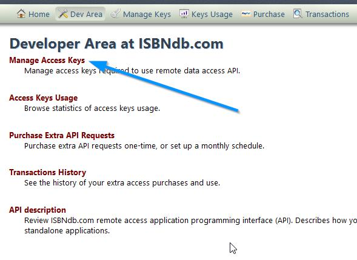
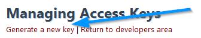
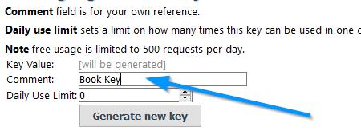

The procedure for enabling this feature in Maian Cart is a simple one. Please follow these instructions:
1 Sign up for a free account at
ISBNDB.com.
2 Log into your account and access the 'Dev Area'.
3 Click 'Manage Access Keys'.

4 Click 'Generate a new key'.

5 Enter comment for key reference. Can be anything. Leave 'Daily Use Limit' blank or enter 0. Then click 'Generate new key':

6 Your new key is created. From the left menu click 'Manage Keys' and copy paste the key on the following
page in your Maian Cart admin area:
System > General Settings > Settings Menu > ISBN Database API
Thats it, you are done.